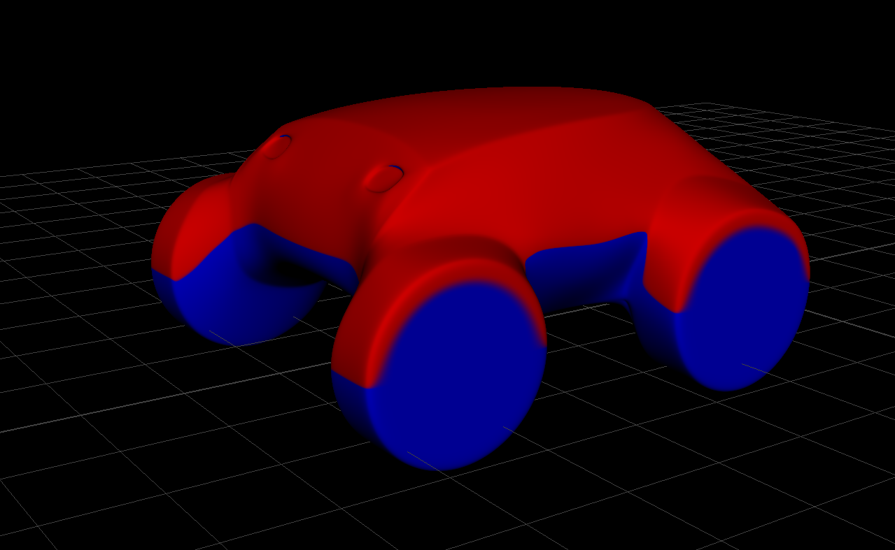

For molding and casting this week, I created some designs for my final project. Through freehand sketches, I went for a round body shape and short wheelbase for a robust and cute rover.
The workflow I chose is of a typical industrial design process, where design goes from exploratory sketching to clay models, and graduates to 3d computer models. At any step, design interventions can be made via sketching on top of the representation at hand.
At this point, the main features of the rover are sensors/cameras, and wheels. I placed a simple body geometry and wheels within the constraints of the wax block in Maya, and sketched over the basic proportions in Procreate
When I had a more refined idea, I used ZBrush to create a 3d digital clay model.
After going through three variations, I settled on a body design, and took the model back to Maya for retopology.
After cleaning up, and simplifying the digital clay model, I modified Maya's procedural snow shader to work as a diagnostic for draft angle.
In order to fabricate the design with two simple molds, and to be able to machine them on CNC, I had to have the curve defined by my diagnostic shader, lying on a plane. Due to time limitations, I went for a freehand approach, where I modified the shape and observed the draft shader in an iterative process until the line was close enough to lying on a plane.

For a following step, I would remodel the design by constraining an inflection curve to lie on a plane in either Maya or Alias.
I converted the polygon model to SubD and NURBS respectively, and transferred the results into Alias for surface evaluation, and Rhino for easy communication with our TA's.
In Rhino, I sliced the model in halves corresponding to the top and bottom molds.
With great help from Calvin, and Chris I converted the Rhino file into gcode for three passes with three different endmills from rough to fine. We modified registration marks and funnels, avoiding concave corners that would require dog bones. Special thanks to Jen for detecting and fixing a height mismatch on my file.
Prior to machining, I marked the center point of the wax block to define as the machine's zero. Unlike Onsrud, Prototrak places zero on the top center of the model.
The first pass is a rough cut to define the main form with a rough endmill.
The second pass is based on horizontal contouring with a finer endmill.
The third pass defines the intersection curve between the mold form and the ground plane. In the cut for the top mold, the contour cut would remove chunk from the side due to a small amount of overhang. In the end we just removed the guide curve around the problem area. The true solution here would be to modify the design to remove the overhang completely, or to design a set of molds with more than two pieces.
The CNC experience with Prototrak was uneventful, despite the scary experience of changing endmills which I got used to after a few times.
I mixed Oomoo, based on Jen's directions, and my notes from Alfonso's recitation a few weeks ago on composites.
Pour material as a thin strand to reduce bubbles.
Mix in a single direction without rushing it.
Switching cups helps get rid of unmixed material in the peripheries.
Shake the material after pouring to reduce bubbles. Dropping repeatedly from 5-10 centimeters helps, and the wax mold is much more durable than I anticipated. Bubbles came to the surface for about 15 minutes of repeated dropping and shaking.
Having more experience with plaster, I got lazy and poured it before mixing it well enough. I also forgot to shake it after pouring, resulting in bubbles and variation in consistency.
The end result has holes from bubbles, a sharp edge where molds meet, and tool marks from CNC. All these marks could have been solved with little post-processing, but I like to keep them as reminders for potential improvements on the workflow.
We read through the data sheet for Hydro-stone, and experimented with varying ratios of water to plaster. On the two part mold, we thought the mold was full when actually the funnel was blocked, resulting in a half object.
For our purposes, adding plaster gradually to water while mixing does work.
There is a specific, cream-like consistency to aim for.
It is important to shake the material to reduce bubbles.
Hydro-stone sets fast, but not as fast as the plaster that I previously used.